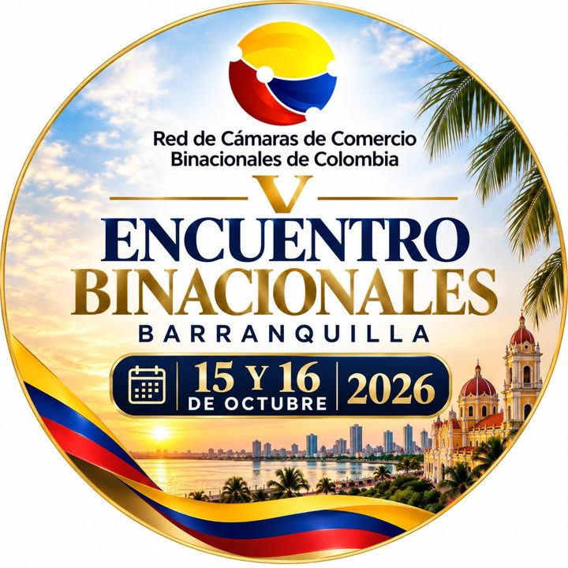

Agenda octubre – noviembre 2026
Eventos del Caribe y Colombia
La CCMCAIT sigue los principales eventos, ferias y encuentros empresariales de la región para que su empresa llegue donde están las oportunidades.

Evento destacado · 15 y 16 de octubre
V Encuentro de Cámaras Binacionales
Barranquilla recibe a la Red de Cámaras de Comercio Binacionales de Colombia, de la cual hace parte la CCMCAIT. Dos días para fortalecer la cooperación entre las cámaras que conectan a Colombia con el mundo.
Si su empresa quiere aprovechar el encuentro para reunirse con la Cámara o con las demás cámaras binacionales, escríbanos y coordinamos la agenda.
4ª International Business Conference (IBC) 2026
Cámara de Comercio Surinam-Guyana. Tema: de la energía a la industria en la cadena de valor Surinam-Guyana. Rueda de negocios B2B.
Energía e industria Sitio del evento →
V Encuentro de Cámaras Binacionales
Red de Cámaras de Comercio Binacionales de Colombia, de la cual hace parte la CCMCAIT. Encuentro de las cámaras binacionales del país.
En ColombiaRed de Cámaras Binacionales
Caribe BIZ Forum 2026
Cámara de Comercio de Barranquilla, Centro de Eventos Puerta de Oro. Sin costo para empresas con matrícula renovada en 2026, sujeto a validación.
En ColombiaNegocios Colombia-Caribe Sitio del evento →
Feria Effix 2026
Plaza Mayor. Comercio electrónico, marketplaces, logística y publicidad digital.
En ColombiaComercio electrónico Sitio del evento →
Bahamas Summit 2026
Centurion One Capital, Rosewood Baha Mar. Encuentro de inversión, solo por invitación.
Capital e inversión Sitio del evento →
Bolsa Turística del Caribe (BTC) 2026
Edición de 30 años de la feria de turismo de referencia en República Dominicana. Fechas por confirmar por el organizador.
Turismo Sitio del evento →
CHIEF 2026
Caribbean Hotel & Tourism Association, Wyndham Grand Barbados Sam Lords Castle. Foro de la industria hotelera.
Turismo y hospitalidad Sitio del evento →
Taste of the Caribbean 2026
Caribbean Hotel & Tourism Association. Competencia culinaria e intercambio con proveedores de alimentos y bebidas.
Alimentos y gastronomía Sitio del evento →
Suriname Tourism & Food Festival 2026
Torarica Resort. La principal feria de turismo de Surinam.
Turismo y alimentos
Agenda verificada el 11 de octubre de 2026 con las fuentes de cada organizador. Las fechas pueden cambiar; confirme con el organizador antes de viajar.
¿Quiere que su empresa vaya a alguno?
Le ayudamos a preparar la agenda, los contactos y las reuniones para que cada evento se convierta en negocios.